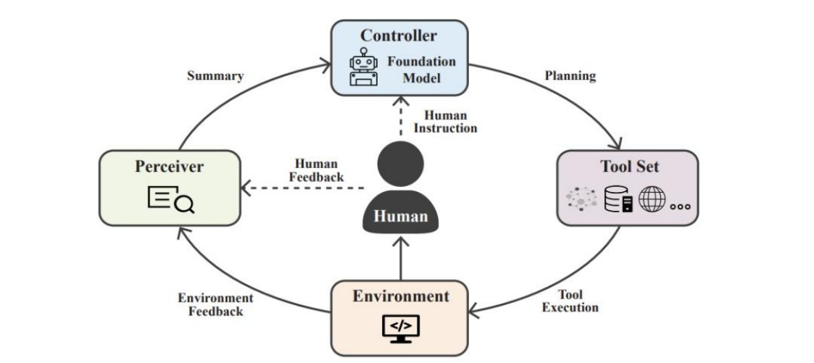

什么是 AI Agent
在大模型技术快速发展的背景下，越来越多的应用不再仅仅把大语言模型当作一个“文本生成工具”，而是把它当作系统中的智能决策核心。在这种架构下，大模型不只是回答问题，而是能够理解目标、规划步骤、调用工具并完成任务，这种具备自主决策能力的系统通常被称为 AI Agent（人工智能智能体）。

简单来说，AI Agent 是一种以大语言模型为核心，通过推理、规划和工具调用来完成复杂任务的智能系统。它不只是被动地响应用户输入，而是能够根据任务目标进行分析，并主动决定下一步应该做什么。例如，在一个智能客服系统中，Agent 不仅可以理解用户的问题，还可以查询知识库、调用数据库接口、生成回复，甚至在必要时创建工单并通知人工客服。整个过程由 Agent 自动完成，而不是由人类逐步操作。
Agent 定义
从技术角度来看，AI Agent 可以理解为一种由大语言模型驱动的任务执行框架。在这个框架中，大语言模型承担了“推理引擎”的角色，而系统则为其提供工具、数据和执行环境，使其能够在真实业务场景中完成复杂任务。通常，一个 AI Agent 具备以下几个核心能力：
第一是理解能力。Agent 需要能够理解用户输入，包括自然语言问题、任务目标以及上下文信息。大语言模型在这一环节负责语义解析和意图识别。
第二是推理能力。在理解任务之后，Agent 需要思考应该采取什么策略，例如是否需要查询数据库、调用 API，或者执行多步操作。
第三是行动能力。Agent 可以调用外部工具，例如搜索系统、向量数据库、代码执行环境、业务接口等，从而获取信息或执行操作。第四是反馈能力。在执行工具之后，Agent 会获得新的信息，并将这些信息重新输入到大语言模型中进行进一步推理，直到最终完成任务。
因此，从系统视角来看，AI Agent 可以被理解为一种 “LLM + Tools + Memory + Planning” 的智能系统架构，其中大语言模型负责决策和推理，而工具和环境负责执行具体操作。
Agent 与普通 LLM 应用区别
很多初学者在接触 AI Agent 时会产生一个疑问：如果大语言模型已经可以回答问题，那么为什么还需要 Agent？ 关键原因在于，普通的 LLM 应用通常只能完成单轮文本生成任务，而 Agent 可以完成复杂的多步骤任务。
在传统的大模型应用中，系统通常采用如下方式工作：
用户输入一个问题，系统将问题发送给大语言模型，然后模型生成一段文本作为回答。整个过程是一次性的，没有任务规划，也没有外部工具调用。例如，一个普通的聊天机器人只能基于训练数据回答问题，如果问题涉及实时信息或数据库数据，它就无法提供准确答案。而在 Agent 系统中，流程会完全不同。Agent 在接收到用户请求后，会先对任务进行分析，然后决定下一步操作。例如：
用户询问订单状态时，Agent 可能会先调用订单查询接口； 用户询问产品信息时，Agent 可能会检索企业知识库； 用户遇到售后问题时，Agent 可能会创建客服工单。
在这个过程中，大语言模型并不是直接生成最终答案，而是作为“决策大脑”，不断思考应该调用什么工具，并根据工具返回的结果继续推理。
因此，AI Agent 与普通 LLM 应用的主要区别体现在以下几个方面：
首先是任务复杂度不同。普通 LLM 应用主要处理单步问题，而 Agent 可以处理多步骤任务。其次是系统能力不同。普通 LLM 只能生成文本，而 Agent 可以调用工具、访问数据库、执行代码甚至控制外部系统。再次是交互模式不同。传统 LLM 应用通常是一次输入一次输出，而 Agent 则可能在内部进行多轮推理和工具调用，最终才生成结果。最后是系统定位不同。普通 LLM 应用更像是一个“智能问答系统”，而 AI Agent 更像是一个“智能执行系统”。
正因为如此，在当前的大模型应用架构中，越来越多的系统开始从简单的 Chatbot 架构逐步演进到 Agent 架构。通过引入工具调用、任务规划和记忆机制，AI 系统不再只是回答问题，而是能够真正参与业务流程，并在一定程度上替代人工操作。